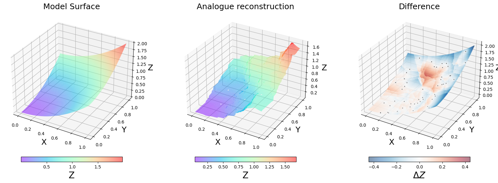

Reconstruction - Analogues#
import warnings
warnings.filterwarnings('ignore')
import numpy as np
import matplotlib.pyplot as plt
import pandas as pd
from sklearn.neighbors import KNeighborsRegressor
from sklearn import preprocessing
https://scikit-learn.org/stable/modules/generated/sklearn.neighbors.KNeighborsRegressor.html
\[\textbf{Model: } z = x^2 + y^2\]
First, we create a matrix for x and y, and apply the model above to obtain z
n_disc = 100 #Discretizations in x and y axis
xp, yp = np.meshgrid(np.linspace(0,1,n_disc), np.linspace(0,1,n_disc)) #Matrix
zp = (xp**2) + (yp**2) #Vector
x, y, z = xp.reshape(-1), yp.reshape(-1), zp.reshape(-1) #Vectors
df = pd.DataFrame({'x': x, 'y': y, 'z': z})
Select a Random number of x, y and z values
n_random = 50 #Number of random values to choosse
df_sel = df.sample(n=n_random).reset_index()
fig = plt.figure(figsize=(15, 8))
ax = fig.add_subplot(121, projection='3d')
ax.plot_surface(xp,yp,zp,alpha=.5, cmap = 'rainbow')
ax.set_xlabel('X', fontsize = 20)
ax.set_ylabel('Y', fontsize = 20)
ax.set_zlabel('Z', fontsize = 20)
ax.set_title('Model Surface', fontsize = 20)
ax1 = fig.add_subplot(122, projection='3d')
ax1.plot_surface(xp, yp, zp, alpha=.3, color='grey')
ax1.scatter(df_sel['x'].values, df_sel['y'].values, df_sel['z'].values,
s = 80, c= df_sel['z'].values, vmin = z.min(), vmax = z.max(), edgecolor = 'black', zorder=3, cmap = 'rainbow')
ax1.set_xlabel('X', fontsize = 20)
ax1.set_ylabel('Y', fontsize = 20)
ax1.set_zlabel('Z', fontsize = 20)
ax1.set_title('Selected Points', fontsize = 20)
Text(0.5, 0.92, 'Selected Points')
We need to fit the analogues method with the selected points: df_sel
n_analogue = 4 #Number of analogues to select
min_max_scaler = preprocessing.MinMaxScaler()
X_train_minmax = min_max_scaler.fit_transform(df_sel[['x', 'y']].values)
y = df_sel['z']
neigh = KNeighborsRegressor(n_neighbors=n_analogue)
neigh.fit(X_train_minmax, y)
KNeighborsRegressor(n_neighbors=4)In a Jupyter environment, please rerun this cell to show the HTML representation or trust the notebook.
On GitHub, the HTML representation is unable to render, please try loading this page with nbviewer.org.
KNeighborsRegressor(n_neighbors=4)
dist, i_an = neigh.kneighbors(
min_max_scaler.transform(df[['x','y']].values),
return_distance = True,
)
# Multiplier factor, inverse of distance
factor = np.transpose((1/dist).T/np.sum(1/dist, axis=1))
fig = plt.figure(figsize=(7, 7))
ax = fig.add_subplot(111)
ax.scatter(df_sel['x'].values, df_sel['y'].values, s=30, c = 'k', alpha=.5, zorder = 2, label = 'Dataset')
ax.set_xlabel('X', fontsize = 20)
ax.set_ylabel('Y', fontsize = 20)
ax.set_title('Analogue Example', fontsize = 20)
#point i
i=5850
ax.scatter(df['x'].values, df['y'].values, s=5, c = 'royalblue', marker = '*', alpha=.1, label = 'Selected points')
ax.scatter(df['x'].values[i], df['y'].values[i], s=200, c = 'r', marker = '*', alpha=.5, label = 'Objective Point')
ax.scatter(df_sel['x'].values[i_an[i]], df_sel['y'].values[i_an[i]], s=70, c = 'r', alpha=.5, label = 'Analogues')
ax.set_xlim([df.x.min(), df.x.max()])
ax.set_ylim([df.y.min(), df.y.max()])
ax.legend(loc=4)
<matplotlib.legend.Legend at 0x7f7bb764d940>
Reconstruct surface#
To reconstruct we need to multiply each analogue for its factor (distance inverse)
z_rec = np.sum(df_sel['z'].values[i_an]*factor, axis=1)
#Convert to matrix for plotting surface
z_rec_p = np.reshape(z_rec, np.shape(zp))
fig = plt.figure(figsize=(20, 7))
ax = fig.add_subplot(131, projection='3d')
im = ax.plot_surface(xp,yp,zp,alpha=.5, cmap = 'rainbow')
ax.set_xlabel('X', fontsize = 18)
ax.set_ylabel('Y', fontsize = 18)
ax.set_zlabel('Z', fontsize = 18)
ax.set_title('Model Surface', fontsize = 18)
plt.colorbar(im, orientation = 'horizontal', pad = 0.05, shrink = .7).set_label('Z', fontsize = 20)
ax1 = fig.add_subplot(132, projection='3d')
im = ax1.plot_surface(xp, yp, z_rec_p, alpha=.5, cmap='rainbow')
ax1.set_xlabel('X', fontsize = 18)
ax1.set_ylabel('Y', fontsize = 18)
ax1.set_zlabel('Z', fontsize = 18)
ax1.set_title('Analogue reconstruction', fontsize = 18)
plt.colorbar(im, orientation = 'horizontal', pad = 0.05, shrink = .7).set_label('Z', fontsize = 20)
ax2 = fig.add_subplot(133, projection='3d')
lim=np.nanmax([np.abs(np.nanmin(z_rec_p-zp)), np.abs(np.nanmax(z_rec_p-zp))])
im = ax2.scatter(xp, yp, zp, s=2, c = z_rec_p-zp, alpha=.5, cmap='RdBu_r', vmin = -lim, vmax=lim)
ax2.set_xlabel('X', fontsize = 18)
ax2.set_ylabel('Y', fontsize = 18)
ax2.set_zlabel('Z', fontsize = 18)
ax2.set_title('Difference', fontsize = 18)
plt.colorbar(im, orientation = 'horizontal', pad = 0.05, shrink = .7).set_label('$\Delta Z$', fontsize = 20)
